- 00 开篇词你为什么需要学习并发编程？.md.html
- 01 如何制定性能调优标准？.md.html
- 02 如何制定性能调优策略？.md.html
- 03 字符串性能优化不容小觑，百M内存轻松存储几十G数据.md.html
- 04 慎重使用正则表达式.md.html
- 05 ArrayList还是LinkedList？使用不当性能差千倍.md.html
- 06 Stream如何提高遍历集合效率？.md.html
- 07 深入浅出HashMap的设计与优化.md.html
- 08 网络通信优化之IO模型：如何解决高并发下IO瓶颈？.md.html
- 09 网络通信优化之序列化：避免使用Java序列化.md.html
- 10 网络通信优化之通信协议：如何优化RPC网络通信？.md.html
- 11 答疑课堂：深入了解NIO的优化实现原理.md.html
- 12 多线程之锁优化（上）：深入了解Synchronized同步锁的优化方法.md.html
- 13 多线程之锁优化（中）：深入了解Lock同步锁的优化方法.md.html
- 14 多线程之锁优化（下）：使用乐观锁优化并行操作.md.html
- 15 多线程调优（上）：哪些操作导致了上下文切换？.md.html
- 16 多线程调优（下）：如何优化多线程上下文切换？.md.html
- 17 并发容器的使用：识别不同场景下最优容器.md.html
- 18 如何设置线程池大小？.md.html
- 19 如何用协程来优化多线程业务？.md.html
- 20 磨刀不误砍柴工：欲知JVM调优先了解JVM内存模型.md.html
- 21 深入JVM即时编译器JIT，优化Java编译.md.html
- 22 如何优化垃圾回收机制？.md.html
- 23 如何优化JVM内存分配？.md.html
- 24 内存持续上升，我该如何排查问题？.md.html
- 25 答疑课堂：模块四热点问题解答.md.html
- 26 单例模式：如何创建单一对象优化系统性能？.md.html
- 27 原型模式与享元模式：提升系统性能的利器.md.html
- 28 如何使用设计模式优化并发编程？.md.html
- 29 生产者消费者模式：电商库存设计优化.md.html
- 30 装饰器模式：如何优化电商系统中复杂的商品价格策略？.md.html
- 31 答疑课堂：模块五思考题集锦.md.html
- 32 MySQL调优之SQL语句：如何写出高性能SQL语句？.md.html
- 33 MySQL调优之事务：高并发场景下的数据库事务调优.md.html
- 34 MySQL调优之索引：索引的失效与优化.md.html
- 35 记一次线上SQL死锁事故：如何避免死锁？.md.html
- 36 什么时候需要分表分库？.md.html
- 37 电商系统表设计优化案例分析.md.html
- 38 数据库参数设置优化，失之毫厘差之千里.md.html
- 39 答疑课堂：MySQL中InnoDB的知识点串讲.md.html
- 41 如何设计更优的分布式锁？.md.html
- 42 电商系统的分布式事务调优.md.html
- 43 如何使用缓存优化系统性能？.md.html
- 44 记一次双十一抢购性能瓶颈调优.md.html
- 加餐 什么是数据的强、弱一致性？.md.html
- 加餐 推荐几款常用的性能测试工具.md.html
- 答疑课堂：模块三热点问题解答.md.html
- 结束语 栉风沐雨，砥砺前行！.md.html
32 MySQL调优之SQL语句：如何写出高性能SQL语句？
你好，我是刘超。
从今天开始，我将带你一起学习 MySQL 的性能调优。MySQL 数据库是互联网公司使用最为频繁的数据库之一，不仅仅因为它开源免费，MySQL 卓越的性能、稳定的服务以及活跃的社区都成就了它的核心竞争力。
我们知道，应用服务与数据库的交互主要是通过 SQL 语句来实现的。在开发初期，我们更加关注的是使用 SQL 实现业务功能，然而系统上线后，随着生产环境数据的快速增长，之前写的很多 SQL 语句就开始暴露出性能问题。
在这个阶段中，我们应该尽量避免一些慢 SQL 语句的实现。但话说回来，SQL 语句慢的原因千千万，除了一些常规的慢 SQL 语句可以直接规避，其它的一味去规避也不是办法，我们还要学会如何去分析、定位到其根本原因，并总结一些常用的 SQL 调优方法，以备不时之需。
那么今天我们就重点看看慢 SQL 语句的几种常见诱因，从这点出发，找到最佳方法，开启高性能 SQL 语句的大门。
慢 SQL 语句的几种常见诱因
1. 无索引、索引失效导致慢查询
如果在一张几千万数据的表中以一个没有索引的列作为查询条件，大部分情况下查询会非常耗时，这种查询毫无疑问是一个慢 SQL 查询。所以对于大数据量的查询，我们需要建立适合的索引来优化查询。
虽然我们很多时候建立了索引，但在一些特定的场景下，索引还有可能会失效，所以索引失效也是导致慢查询的主要原因之一。针对这点的调优，我会在第 34 讲中详解。
2. 锁等待
我们常用的存储引擎有 InnoDB 和 MyISAM，前者支持行锁和表锁，后者只支持表锁。
如果数据库操作是基于表锁实现的，试想下，如果一张订单表在更新时，需要锁住整张表，那么其它大量数据库操作（包括查询）都将处于等待状态，这将严重影响到系统的并发性能。
这时，InnoDB 存储引擎支持的行锁更适合高并发场景。但在使用 InnoDB 存储引擎时，我们要特别注意行锁升级为表锁的可能。在批量更新操作时，行锁就很可能会升级为表锁。
MySQL 认为如果对一张表使用大量行锁，会导致事务执行效率下降，从而可能造成其它事务长时间锁等待和更多的锁冲突问题发生，致使性能严重下降，所以 MySQL 会将行锁升级为表锁。还有，行锁是基于索引加的锁，如果我们在更新操作时，条件索引失效，那么行锁也会升级为表锁。
因此，基于表锁的数据库操作，会导致 SQL 阻塞等待，从而影响执行速度。在一些更新操作（insert\update\delete）大于或等于读操作的情况下，MySQL 不建议使用 MyISAM 存储引擎。
除了锁升级之外，行锁相对表锁来说，虽然粒度更细，并发能力提升了，但也带来了新的问题，那就是死锁。因此，在使用行锁时，我们要注意避免死锁。关于死锁，我还会在第 35 讲中详解。
3. 不恰当的 SQL 语句
使用不恰当的 SQL 语句也是慢 SQL 最常见的诱因之一。例如，习惯使用 <SELECT >，<SELECT COUNT()> SQL 语句，在大数据表中使用 <LIMIT M,N> 分页查询，以及对非索引字段进行排序等等。
优化 SQL 语句的步骤
通常，我们在执行一条 SQL 语句时，要想知道这个 SQL 先后查询了哪些表，是否使用了索引，这些数据从哪里获取到，获取到数据遍历了多少行数据等等，我们可以通过 EXPLAIN 命令来查看这些执行信息。这些执行信息被统称为执行计划。
1. 通过 EXPLAIN 分析 SQL 执行计划
假设现在我们使用 EXPLAIN 命令查看当前 SQL 是否使用了索引，先通过 SQL EXPLAIN 导出相应的执行计划如下：
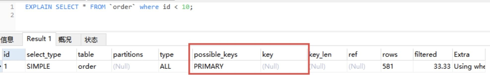
下面对图示中的每一个字段进行一个说明，从中你也能收获到很多零散的知识点。
- id：每个执行计划都有一个 id，如果是一个联合查询，这里还将有多个 id。
- select_type：表示 SELECT 查询类型，常见的有 SIMPLE（普通查询，即没有联合查询、子查询）、PRIMARY（主查询）、UNION（UNION 中后面的查询）、SUBQUERY（子查询）等。
- table：当前执行计划查询的表，如果给表起别名了，则显示别名信息。
- partitions：访问的分区表信息。
- type：表示从表中查询到行所执行的方式，查询方式是 SQL 优化中一个很重要的指标，结果值从好到差依次是：system > const > eq_ref > ref > range > index > ALL。
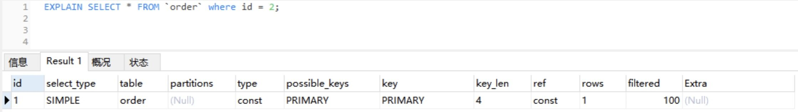
- system/const：表中只有一行数据匹配，此时根据索引查询一次就能找到对应的数据。如果是 B + 树索引，我们知道此时索引构造成了多个层级的树，当查询的索引在树的底层时，查询效率就越低。const 表示此时索引在第一层，只需访问一层便能得到数据。
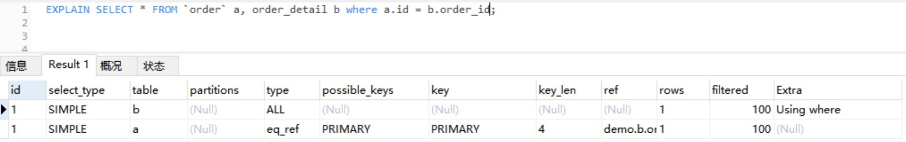
- eq_ref：使用唯一索引扫描，常见于多表连接中使用主键和唯一索引作为关联条件。
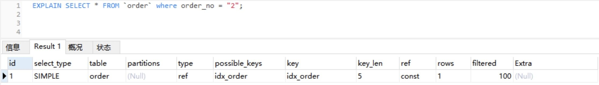
- ref：非唯一索引扫描，还可见于唯一索引最左原则匹配扫描。
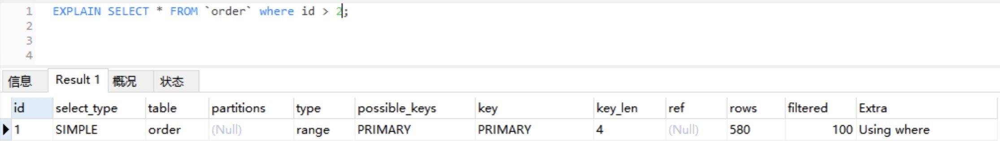
- range：索引范围扫描，比如，<，>，between 等操作。

- index：索引全表扫描，此时遍历整个索引树。
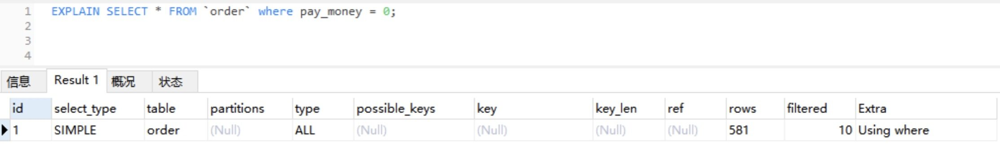
- ALL：表示全表扫描，需要遍历全表来找到对应的行。
- possible_keys：可能使用到的索引。
- key：实际使用到的索引。
- key_len：当前使用的索引的长度。
- ref：关联 id 等信息。
- rows：查找到记录所扫描的行数。
- filtered：查找到所需记录占总扫描记录数的比例。
- Extra：额外的信息。
2. 通过 Show Profile 分析 SQL 执行性能
上述通过 EXPLAIN 分析执行计划，仅仅是停留在分析 SQL 的外部的执行情况，如果我们想要深入到 MySQL 内核中，从执行线程的状态和时间来分析的话，这个时候我们就可以选择 Profile。
Profile 除了可以分析执行线程的状态和时间，还支持进一步选择 ALL、CPU、MEMORY、BLOCK IO、CONTEXT SWITCHES 等类型来查询 SQL 语句在不同系统资源上所消耗的时间。以下是相关命令的注释：
SHOW PROFILE [type [, type] ... ]
[FOR QUERY n]
[LIMIT row_count [OFFSET offset]]
type 参数：
| ALL：显示所有开销信息
| BLOCK IO：阻塞的输入输出次数
| CONTEXT SWITCHES：上下文切换相关开销信息
| CPU：显示 CPU 的相关开销信息
| IPC：接收和发送消息的相关开销信息
| MEMORY ：显示内存相关的开销，目前无用
| PAGE FAULTS ：显示页面错误相关开销信息
| SOURCE ：列出相应操作对应的函数名及其在源码中的调用位置 (行数)
| SWAPS：显示 swap 交换次数的相关开销信息
值得注意的是，MySQL 是在 5.0.37 版本之后才支持 Show Profile 功能的，如果你不太确定的话，可以通过 select @@have_profiling 查询是否支持该功能，如下图所示：
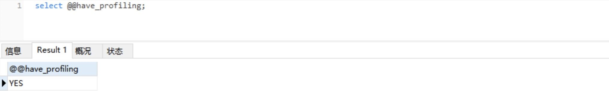
最新的 MySQL 版本是默认开启 Show Profile 功能的，但在之前的旧版本中是默认关闭该功能的，你可以通过 set 语句在 Session 级别开启该功能：
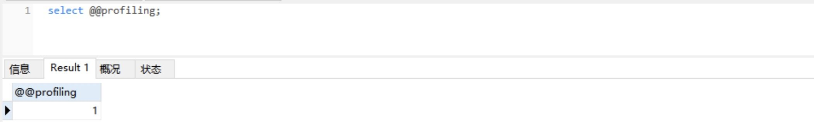
Show Profiles 只显示最近发给服务器的 SQL 语句，默认情况下是记录最近已执行的 15 条记录，我们可以重新设置 profiling_history_size 增大该存储记录，最大值为 100。
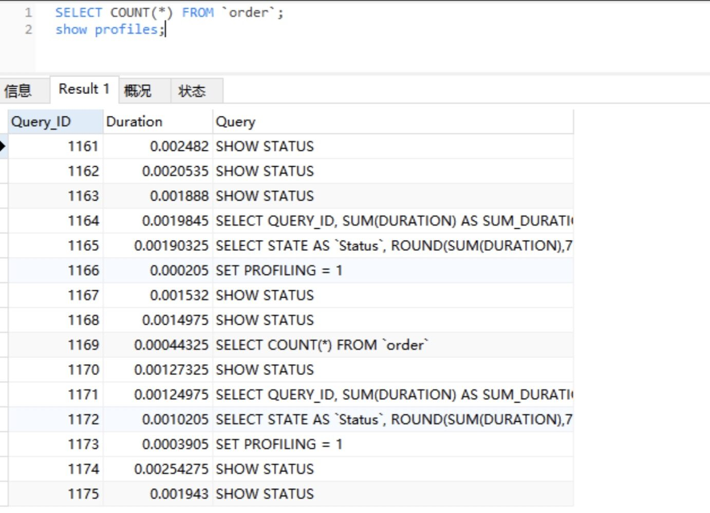
获取到 Query_ID 之后，我们再通过 Show Profile for Query ID 语句，就能够查看到对应 Query_ID 的 SQL 语句在执行过程中线程的每个状态所消耗的时间了：
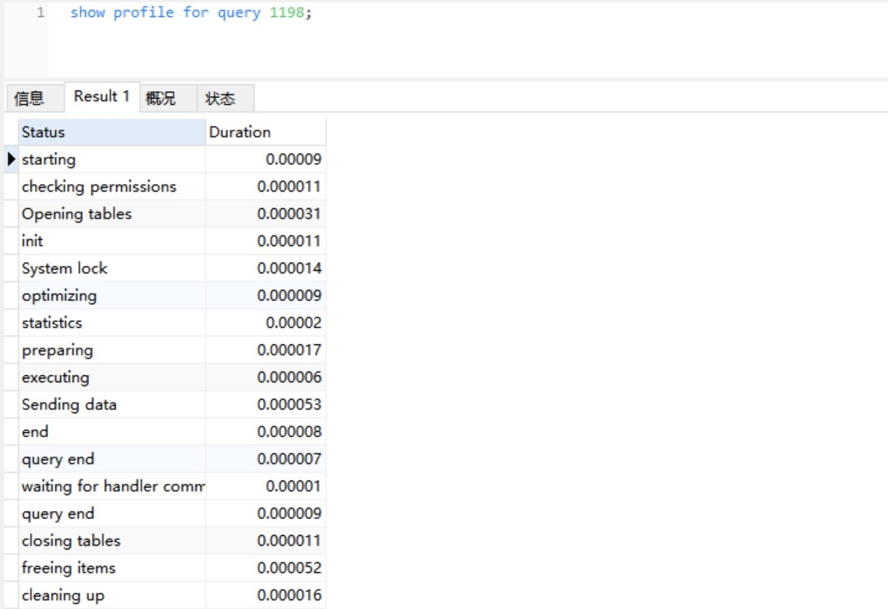
通过以上分析可知：SELECT COUNT(*) FROM order; SQL 语句在 Sending data 状态所消耗的时间最长，这是因为在该状态下，MySQL 线程开始读取数据并返回到客户端，此时有大量磁盘 I/O 操作。
常用的 SQL 优化
在使用一些常规的 SQL 时，如果我们通过一些方法和技巧来优化这些 SQL 的实现，在性能上就会比使用常规通用的实现方式更加优越，甚至可以将 SQL 语句的性能提升到另一个数量级。
1. 优化分页查询
通常我们是使用 <LIMIT M,N> + 合适的 order by 来实现分页查询，这种实现方式在没有任何索引条件支持的情况下，需要做大量的文件排序操作（file sort），性能将会非常得糟糕。如果有对应的索引，通常刚开始的分页查询效率会比较理想，但越往后，分页查询的性能就越差。
这是因为我们在使用 LIMIT 的时候，偏移量 M 在分页越靠后的时候，值就越大，数据库检索的数据也就越多。例如 LIMIT 10000,10 这样的查询，数据库需要查询 10010 条记录，最后返回 10 条记录。也就是说将会有 10000 条记录被查询出来没有被使用到。
我们模拟一张 10 万数量级的 order 表，进行以下分页查询：
select * from `demo`.`order` order by order_no limit 10000, 20;
通过 EXPLAIN 分析可知：该查询使用到了索引，扫描行数为 10020 行，但所用查询时间为 0.018s，相对来说时间偏长了。
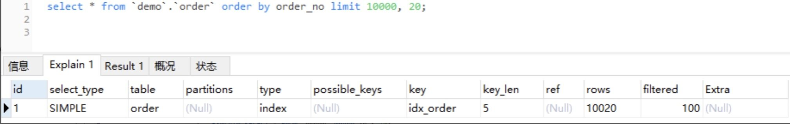
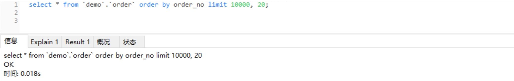
- 利用子查询优化分页查询
以上分页查询的问题在于，我们查询获取的 10020 行数据结果都返回给我们了，我们能否先查询出所需要的 20 行数据中的最小 ID 值，然后通过偏移量返回所需要的 20 行数据给我们呢？我们可以通过索引覆盖扫描，使用子查询的方式来实现分页查询：
select * from `demo`.`order` where id> (select id from `demo`.`order` order by order_no limit 10000, 1) limit 20;
通过 EXPLAIN 分析可知：子查询遍历索引的范围跟上一个查询差不多，而主查询扫描了更多的行数，但执行时间却减少了，只有 0.004s。这就是因为返回行数只有 20 行了，执行效率得到了明显的提升。
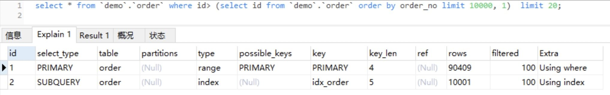
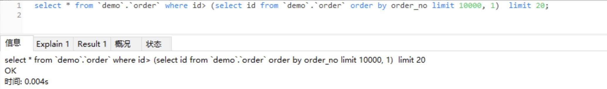
2. 优化 SELECT COUNT(*)
COUNT() 是一个聚合函数，主要用来统计行数，有时候也用来统计某一列的行数量（不统计 NULL 值的行）。我们平时最常用的就是 COUNT(*) 和 COUNT(1) 这两种方式了，其实两者没有明显的区别，在拥有主键的情况下，它们都是利用主键列实现了行数的统计。
但 COUNT() 函数在 MyISAM 和 InnoDB 存储引擎所执行的原理是不一样的，通常在没有任何查询条件下的 COUNT(*)，MyISAM 的查询速度要明显快于 InnoDB。
这是因为 MyISAM 存储引擎记录的是整个表的行数，在 COUNT(*) 查询操作时无需遍历表计算，直接获取该值即可。而在 InnoDB 存储引擎中就需要扫描表来统计具体的行数。而当带上 where 条件语句之后，MyISAM 跟 InnoDB 就没有区别了，它们都需要扫描表来进行行数的统计。
如果对一张大表经常做 SELECT COUNT(*) 操作，这肯定是不明智的。那么我们该如何对大表的 COUNT() 进行优化呢？
- 使用近似值
有时候某些业务场景并不需要返回一个精确的 COUNT 值，此时我们可以使用近似值来代替。我们可以使用 EXPLAIN 对表进行估算，要知道，执行 EXPLAIN 并不会真正去执行查询，而是返回一个估算的近似值。
- 增加汇总统计
如果需要一个精确的 COUNT 值，我们可以额外新增一个汇总统计表或者缓存字段来统计需要的 COUNT 值，这种方式在新增和删除时有一定的成本，但却可以大大提升 COUNT() 的性能。
3. 优化 SELECT *
我曾经看过很多同事习惯在只查询一两个字段时，都使用 select * from table where xxx 这样的 SQL 语句，这种写法在特定的环境下会存在一定的性能损耗。
MySQL 常用的存储引擎有 MyISAM 和 InnoDB，其中 InnoDB 在默认创建主键时会创建主键索引，而主键索引属于聚族索引，即在存储数据时，索引是基于 B + 树构成的，具体的行数据则存储在叶子节点。
而 MyISAM 默认创建的主键索引、二级索引以及 InnoDB 的二级索引都属于非聚族索引，即在存储数据时，索引是基于 B + 树构成的，而叶子节点存储的是主键值。
假设我们的订单表是基于 InnoDB 存储引擎创建的，且存在 order_no、status 两列组成的组合索引。此时，我们需要根据订单号查询一张订单表的 status，如果我们使用 select * from order where order_no='xxx’来查询，则先会查询组合索引，通过组合索引获取到主键 ID，再通过主键 ID 去主键索引中获取对应行所有列的值。
如果我们使用 select order_no, status from order where order_no='xxx’来查询，则只会查询组合索引，通过组合索引获取到对应的 order_no 和 status 的值。如果你对这些索引还不够熟悉，请重点关注之后的第 34 讲，那一讲会详述数据库索引的相关内容。
总结
在开发中，我们要尽量写出高性能的 SQL 语句，但也无法避免一些慢 SQL 语句的出现，或因为疏漏，或因为实际生产环境与开发环境有所区别，这些都是诱因。面对这种情况，我们可以打开慢 SQL 配置项，记录下都有哪些 SQL 超过了预期的最大执行时间。首先，我们可以通过以下命令行查询是否开启了记录慢 SQL 的功能，以及最大的执行时间是多少：
Show variables like 'slow_query%';
Show variables like 'long_query_time';
如果没有开启，我们可以通过以下设置来开启：
set global slow_query_log='ON'; // 开启慢 SQL 日志
set global slow_query_log_file='/var/lib/mysql/test-slow.log';// 记录日志地址
set global long_query_time=1;// 最大执行时间
除此之外，很多数据库连接池中间件也有分析慢 SQL 的功能。总之，我们要在编程中避免低性能的 SQL 操作出现，除了要具备一些常用的 SQL 优化技巧之外，还要充分利用一些 SQL 工具，实现 SQL 性能分析与监控。
思考题
假设有一张订单表 order，主要包含了主键订单编码 order_no、订单状态 status、提交时间 create_time 等列，并且创建了 status 列索引和 create_time 列索引。此时通过创建时间降序获取状态为 1 的订单编码，以下是具体实现代码：
select order_no from order where status =1 order by create_time desc
你知道其中的问题所在吗？我们又该如何优化？